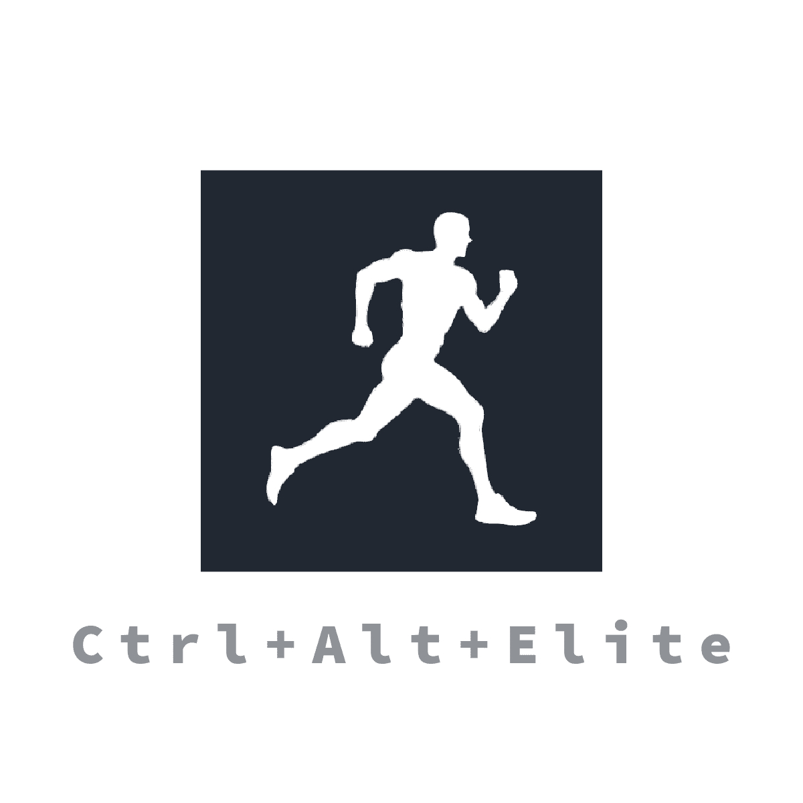

Découvrez notre entreprise Ctrl+Alt+Elite
Notre entreprise, Ctrl + Alt + Elite, fondée en septembre 2024, est composée de cinq passionnés d’informatique, tous étudiants à l’EPITA. Bien que récemment créée et sans jeu à son actif pour l’instant, nous travaillons avec détermination sur notre premier projet, Syndrome Fear, dont la sortie est prévue pour 2025. De la conception de l’histoire à la sélection des graphismes, en passant par son développement en C#, nous mettons tout en œuvre pour offrir une expérience de jeu unique.
Les membres de l'équipe

Louis
Je m’appelle Louis, j’ai 17 ans, et je suis passionné par les énigmes et l’informatique, des domaines où la réflexion et la résolution de problèmes jouent un rôle clé. J’ai obtenu un baccalauréat général avec les spécialités Mathématiques et Numérique et Sciences informatiques, ce qui m’a permis de développer une base solide pour comprendre et manipuler les technologies actuelles et anciennes qui m’intéressent.
Ma curiosité insatiable m’a poussé à explorer les outils informatiques dans leurs moindres détails, notamment des technologies vintage comme les disquettes 3.5 pouces et les écrans cathodiques. Cette passion pour l’informatique rétro m’a permis d’acquérir une expertise dans la manipulation et la réparation de matériel ancien, et de comprendre en profondeur le fonctionnement de ces outils d’une autre époque.
Au fil des années, j’ai affiné mes compétences en matière de résolution de problèmes techniques, ce qui a renforcé ma patience, ma persévérance et ma capacité à faire face à des défis complexes. C’est pour cela que je suis chargé de concevoir les énigmes destinées à captiver et défier les joueurs dans Syndrome Fear.
Pierre
Je m’appelle Pierre, j’ai 18 ans, et je suis passionné par l’informatique, l’électronique et les jeux vidéo. Dès mon plus jeune âge, j’ai voulu en faire mon métier. Curieux et bon orateur, j’ai acquis des compétences variées.
J’ai commencé très jeune l’algorithmique, puis j’ai enchaîné avec des langages plus complexes, la découverte de Linux au collège et l’électronique avec Arduino. C’est donc avec la soif d’apprendre que je me lance dans ce projet réunissant deux de mes passions : les jeux vidéo et l’informatique, plus précisément le développement.
Grâce à mes expériences et erreurs passées, j’ai appris à travailler en équipe, à m’imposer des délais et à résoudre des problèmes. Aujourd’hui, je mets à profit ces apprentissages pour collaborer efficacement et atteindre nos objectifs.
Thibault
Je m’appelle Thibault et j’ai actuellement 18 ans. Curieux de nature, j’ai eu de nombreuses passions au cours de ma vie. Deux d’entre elles ont suscité un intérêt particulier : l’informatique et la programmation.
Ma passion pour l’informatique est née durant le confinement, où j’ai écrit mes premières lignes de code, d’abord pour créer un jeu vidéo en Python, puis des sites Internet et des logiciels. Mon envie de partager cette passion m’a conduit à fonder le projet “CODEUR PRO”, une association dédiée à la vulgarisation informatique.
Dans ce projet, je suis créateur de l’histoire, responsable de la communication, et développeur. Cette aventure me permet d’exprimer ma créativité tout en développant des compétences essentielles.
Axel
Je m’appelle Axel, j’ai 18 ans, et depuis que je suis petit, je suis passionné d’informatique. Pour moi, c’est vraiment la clé pour créer et résoudre des problèmes. Ce qui m’excite le plus dans ce projet, c’est la liberté créative que nous avons.
Étudiant à l’EPITA, je modère également un serveur Discord d’entraide avec plus de 18 000 membres. Cette expérience enrichissante me permet de partager mes connaissances et d’aider les autres. À travers ce projet, je vise à approfondir mes compétences en C# tout en renforçant mes capacités organisationnelles et collaboratives.
Bashir
Né d’une famille où l’informatique occupe une place centrale, j’ai grandi dans un environnement propice à nourrir ma curiosité et ma passion pour ce domaine. À 18 ans, intégrer l’EPITA représente pour moi un nouveau départ vers mon rêve : devenir ingénieur en informatique spécialisé dans le développement de jeux vidéo.
Dans ce projet, je compte apporter ma rigueur, mon esprit analytique et mes compétences en programmation pour aider le groupe à surmonter les défis techniques et à proposer des solutions innovantes.